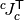

Constraints and contacts¶
Gauss-Seidel algorithm¶
- World.update_constraints(dt, maxiters=1000, tol=0.0001)
Parameters: - dt (float) – integration time
- maxiters (int) – maximum number of iteration to find the proper constraint forces
- tol (float) – convergence tolerance, corresponding to the norm(gvel_i - gvel_i-1)
In accordance with the integration scheme, we assume the following first order model between generalized velocities and generalized forces:

where:
- the admittance matrix
 takes into account a
first order model of the actuators,
takes into account a
first order model of the actuators, - the actuators generalized forces
are assumed to be constant during the
![[t , t+dt ]](_images/math/dca874af37778dd884dda65a85f308933605926a.png) time interval.
time interval.
This (constraint-free) model must be completed by constraints forces , which are mapped to generalized forces by the constraint jacobian :
one can also define the constraint velocity as: so that:

&= \J[c]_c(t) \; \GVel(t+dt)\\
&= \J[c]_c(t) \; Y(t)
\left(
\frac{M(t)}{dt} \GVel(t) + \; \GForce(t)
\right)
+ \sum_d \; \J[c]_c(t) \; Y(t) \; \J[d]_d\tp(t)
\; \force[d](t)](_images/math/9ac639d260daf5988be39728711b7f4e8b320048.png)
one can define the (global) constraints velocity , force , jacobian matrix and admittance matrix
 :
:and get a synthetic expression:
This method computes the constraint forces in three steps:
- ask each active constraint object for its jacobian,
- compute
 ,
,  and ,
and , - iterate over each constraint object in order to compute . At each iteration the force is updated by
- eventually add each active constraint generalized force to world _gforce property.
TODO: add an example.
Constraints¶
Kinematic Constraints¶
- class arboris.constraints.BallAndSocketConstraint(frames, name=None)¶
Create a ball and socket joint constraint between two frames.
This class describes and solves a ball and socket kinematic constraint between two frames which are rigidly fixed to two distinct bodies.
Let’s denote 0 and 1 these two frames. The constraint can be expressed as a condition on their relative pose, requiring that the ball and socket centers be co-located:
Solving the constraint means computing the right constraint force that will ensure that the kinematic condition will be met.
Let’s define the constraint velocity
and the constraint force
 as
asThe constraint jacobian is then given by
In order to solve the constraint, an adjustement of the constraint force is computed by the solve method. This method is given as argument the current estimation of constraint velocity, which corresponds to and takes into account the coupling between the contraints.
- solve(vel, admittance, dt)¶
from this equation
given that we want , we return
and update the constraint force adjustment
The function arguments are
- vel:
- admittance:
- dt:
Tests:
>>> c = BallAndSocketConstraint(frames=(None, None)) >>> c._pos0 = array([0.1, 0.2, 0.3]) >>> c._force = array([-0.1, -0.2, -0.3]) >>> vel = zeros((3)) >>> adm = 0.5*eye(3) >>> dt = 0.1 >>> dforce = c.solve(vel, adm, dt) >>> c._pos0 + dt * ( vel + dot(adm, dforce) ) array([ 0., 0., 0.]) >>> vel = array([0.05, -0.05, 0.05]) >>> dforce = c.solve(vel, adm, dt) >>> c._pos0 + dt * ( vel + dot(adm, dforce) ) array([ 0., 0., 0.])
- update(dt)¶
Compute the predicted relative position error between the socket and ball centers, and save it in self._pos0.
Joint limits¶
- class arboris.constraints.JointLimits(joint, min_limits, max_limits, proximity=None, name=None)¶
This class describes and solves joint limits constraints.
Let’s denote
 the joint generalized position, and
the joint generalized position, and  and
and  the joint
limits. This class purpose is to enforce the following constraint on
the joint
limits. This class purpose is to enforce the following constraint on through a generalized force
, while ensuring the Signorini
conditions holds
Contacts¶
Note
we do not deal with non-point contact
- class arboris.constraints.PointContact(shapes, collision_solver, proximity, name)¶
Parent class for all point contacts.
Solving a contact constraint involves two steps:
- the update method does the collision detection then updates the contacts frames,
- the solve method, called at each iteration of the Gauss-Seidel algorithm computes contact forces compatible with the contact model.
The PointContact class implements the first step by calling a collision_solver function. Implementing the second one is the responsability of a daughter class.
- update(dt)¶
This method calls the collision solver and updates the constraint status and the contact frames poses accordingly. The two frames have the same orientation, with the contact normal along the
 -axis
-axis
- class arboris.constraints.SoftFingerContact(shapes, friction_coeff, collision_solver=None, proximity=0.02, name=None)¶
This class implements a soft-finger point contact constraint.
Let’s consider two convex objects (shapes) and attach a frame to each of them in such a way that:
- their origin are chosen on the object surface, where the (signed) distance between the objects is minimal,
- the two frames are aligned,
- the normal to the object’s surface is along their z-axis.
If we denote 0 and 1 the two frames, their coordinate change matrix has the following form:
where
 is the signed distance between the objects.
If , the objects are in contact, if they
penetrate each other.
is the signed distance between the objects.
If , the objects are in contact, if they
penetrate each other.We consider here point contacts with a Coulomb friction model, extended to involve torque resisting to torsion, as described in Liu2003 and Trinkle2001 and often denoted as “soft finger contact”. The contact wrench can be decomposed as:
The Signorini law (or complementarity condition) imposes conditions on the normal force (aka. pressure force):
which are often summarized as .
TODO: check the contact rupture condition is good. (Duindam, in his phd, chose a very specific one).
Additionnaly, the Coulomb law of friction with the elliptic friction model states that the contact is in static friction mode and only rolling motion occurs if and:
where , , are normalization coefficents and
 is the coefficient of friction.
In such a case, the contact relative twist has the form:
is the coefficient of friction.
In such a case, the contact relative twist has the form:Otherwise, the friction is said to be dynamic, and additionnal sliding and pivoting motions occur:
with:
and
References:
- solve(vel, admittance, dt)¶
We map: - vel: - admittance:
- dt:
- dforce : Let’s define the constraint velocity
with
and the constraint force
so that
at the
 -iest iteration of the Gauss-Seidel algorithm, we have
-iest iteration of the Gauss-Seidel algorithm, we havefor static friction we’ll need
and
which leads to

for dynamic friction, the condition on sliding velocity and contact persistance lead to
![v^k(t+dt)
&=
s
\begin{bmatrix}
\frac{1}{e_p^2} & 0 & 0 & 0 \\
0 & \frac{1}{e_x^2} & 0 & 0 \\
0 & 0 & \frac{1}{e_y^2} & 0 \\
0 & 0 & 0 & 0
\end{bmatrix}
(f^{k-1}+\Delta f)
+
\begin{bmatrix}
0 \\ 0 \\ 0 \\ -\frac{d(t)}{dt}
\end{bmatrix} \\
\Leftrightarrow
v^*(t+dt) + Y \Delta f
&=
s
\begin{bmatrix}
\frac{1}{e_p^2} & 0 & 0 & 0 \\
0 & \frac{1}{e_x^2} & 0 & 0 \\
0 & 0 & \frac{1}{e_y^2} & 0 \\
0 & 0 & 0 & 0
\end{bmatrix}
\left( f^{k-1}+\Delta f \right)
+
\begin{bmatrix}
0 \\ 0 \\ 0 \\ -\frac{d(t)}{dt}
\end{bmatrix}](_images/math/c59d96ef79f915b3327feab68f504f98127bcc00.png)
Finally, we get
and
while denoting
Note that
 is still unknown. However,
is still unknown. However,can be rewritten
so that if we can find
solution of
then we’re done.
Let’s decompose
, using numpy notations, noticing that it is
symmetric:It can then be block-diagonalized:
![\left(
Y - s
\begin{bmatrix}
\frac{1}{e_p^2} & 0 & 0 & 0 \\
0 & \frac{1}{e_x^2} & 0 & 0 \\
0 & 0 & \frac{1}{e_y^2} & 0 \\
0 & 0 & 0 & 0
\end{bmatrix}
\right)
&=
\begin{bmatrix}
Y_t - s
\begin{bmatrix}
\frac{1}{e_p^2} & 0 & 0 \\
0 & \frac{1}{e_x^2} & 0 \\
0 & 0 & \frac{1}{e_y^2}
\end{bmatrix}
& Y_c \\
Y_c\tp & y_n
\end{bmatrix}
\\
&=
\begin{bmatrix}
I_{3 \times 3} & Y_c/y_n \\
0_{1 \times 3} & 1
\end{bmatrix}
\begin{bmatrix}
Y_t - Y_c\;Y_c\tp/y_n - s
\begin{bmatrix}
\frac{1}{e_p^2} & 0 & 0 \\
0 & \frac{1}{e_x^2} & 0 \\
0 & 0 & \frac{1}{e_y^2}
\end{bmatrix}
& 0_{3 \times 1} \\
0_{1 \times 3} & y_n
\end{bmatrix}
\begin{bmatrix}
I_{3 \times 3} & 0_{3 \times 1} \\
Y_c\tp/y_n & 1
\end{bmatrix}](_images/math/b3c3b9b213782ae015beeff185946044c158b1db.png)
and its inverse
![\left(
Y - s
\begin{bmatrix}
\frac{1}{e_p^2} & 0 & 0 & 0 \\
0 & \frac{1}{e_x^2} & 0 & 0 \\
0 & 0 & \frac{1}{e_y^2} & 0 \\
0 & 0 & 0 & 0
\end{bmatrix}
\right)^{-1}
&=
\begin{bmatrix}
I_{3 \times 3} & 0_{3 \times 1} \\
-Y_c\tp/y_n & 1
\end{bmatrix}
\begin{bmatrix}
\left(Y_t - Y_c\;Y_c\tp/y_n - s
\begin{bmatrix}
\frac{1}{e_p^2} & 0 & 0 \\
0 & \frac{1}{e_x^2} & 0 \\
0 & 0 & \frac{1}{e_y^2}
\end{bmatrix}\right)^{-1}
& 0_{3 \times 1} \\
0_{1 \times 3} & 1
\end{bmatrix}
\begin{bmatrix}
I_{3 \times 3} & -Y_c/y_n \\
0_{1 \times 3} & y_n^{-1}
\end{bmatrix}](_images/math/07e3ee4471fd7e251d50831f48be4e8ef52798b1.png)
injecting this last expression into, it can be shown that
is
an eigen value of the  matrix
matrix
where the following values have been introduced
 should be real and negative (in order to ensure that the friction
force opposes motion). If has several real negative eigen-values,
we choose the smallest, which leads to the smaller friction forces.
should be real and negative (in order to ensure that the friction
force opposes motion). If has several real negative eigen-values,
we choose the smallest, which leads to the smaller friction forces.Note
the full math is available as a pdf, within that document, is denoted .
- update(dt)¶
This method calls the collision solver and updates the constraint status and the contact frames poses accordingly. The two frames have the same orientation, with the contact normal along the
-axis